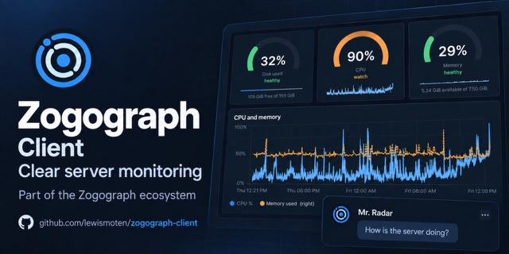

Zogograph Client
AI-assisted server monitoring

PHP and SQLite collectors with a JavaScript dashboard make server telemetry, alerts, and diagnostics readable, and an AI assistant calls diagnostic tools and tracks what an investigation costs.
Executive summary
Why it exists
A monitor you have to remember to look at tells you afterwards. Zogograph answers three questions: what is happening now, what is growing, and where to go to fix it. It also emails when something jumps, and it can tell you before a home directory fills up.
Outcome
The source release has no dependencies and ships a CycloneDX software bill of materials, third-party notices, and a security policy. It is source-available under FSL-1.1-Apache-2.0, and each release becomes Apache-2.0 two years after it ships.
My role
Author and maintainer.
Technical overview
How it works
A PHP account collector run by cron, a host collector run by root from WHM's crontab (it sees what CageFS hides from the account), and a static dashboard that talks to a single API file. Readings go into SQLite databases that are never served. A health page depends on nothing, so it works when the rest does not. A setup wizard runs in a browser or at a prompt. An AI assistant calls diagnostic tools and tracks the cost of an investigation.
Hard parts
The account collector and the host collector see different things, so they run separately. Collectors are command-line only, with .htaccess denying them over HTTP, and the README documents migration safety.